Qwen/Qwen3.5-0.8B
mean reward 0.125 · compile rate 25% · 84 valid rollouts. Blue = reference; green ≥ 0.9, orange ≥ 0.4, red below. Hover a tile for the generated OpenSCAD.
L1 · example 0 · mean 0.10 · max 0.40
Create an upright cylinder of height 55mm and diameter 20mm.

;")
 {
// Define the start point of the cylinder that defines the upper side
translate([0,0,-1], base_point = 55);
// Create a cylinder from the start point down to the base point
translate(55,0,-2);
cylinder(h=55, r=20, $fn=64);
// Create an inverted cylinder from the base point up to the top
translate(55,0,3);
cylinder(h=20, r=20, $fn=64);
// Translate the top cylinder back into the original plane
translate(55,0,-5);
}")
L2 · example 1 · mean 0.20 · max 0.82
Create a 75mm by 65mm plate of thickness 11mm with a centered 30mm-diameter through-hole.

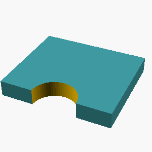
;
difference() {
translate(0, 65/2, -5) cylinder(h=16, r=29, $fn=64);
translate(0, 65/2, 5) cylinder(h=16, r=29, $fn=64);
translate(0, 65/2, 0) cube([10,10,8]);
}")
L3 · example 2 · mean 0.00 · max 0.00
An L-shaped bracket 20mm wide: a horizontal leg 65mm long and a vertical leg 30mm tall, both 10mm thick, joined at a right angle. The horizontal leg has a circular hole of radius 4mm through its center, drilled vertically.

 {
// Center line between the two leg ends
translate(15, 40);
// Drawing assembly line
rectangle(0, 5, 1, 40);
translate(-1, 0);
rectangle(1, 5, 1, 40);
// Horizontal leg: 20 wide x 65 long x 10 thick
translate(15, 0);
square(20, 65, 10);
translate(-15, 0);
rectangle(0, 35, 4, 10); // Center hole radius 4mm
// Vertical leg: 20 wide x 30 tall x 10 thick
translate(29, 0);
square(20, 30, 10);
translate(-30, 0);
rectangle(0, 60, 4, 10); // Center hole radius 4mm
}")
 {
cube([20,20,10]);
translatex(-65, 0,0); // Move back to start of horizontal leg
translatey(0, -30,0); // Move back to start of vertical leg
cylinder(h=65, r=65, $fn=64); // Vertical leg, radius = thickness => 10mm
translate(0,65,-30); // Align vertical leg right side with horizontal leg
cylinder(h=30, r=4, $fn=64); // Vertical branch, height = leg length, radius = 4mm hole
translate(0,-4,11); // Align bottom of vertical branch to the cylinder
}")
L4 · example 3 · mean 0.20 · max 0.41
A monument-like shape: a circular base plate of radius 40mm and thickness 10mm, with a cylindrical post of radius 8mm and height 50mm standing centered on top of it, and the post capped with a hemispherical dome of radius 8mm.

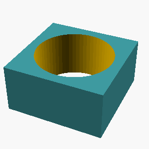
 {
// Main circular base plate
cylinder(r=40, thickness=10, $fn=64);
// Cylindrical post (standing on top) with additional $fn for tips, though description implies just the post body and cap
cylinder(h=50, r=8, $fn=64);
translate([0, 0, 20]); // Remove the center hole due additional wanting to prevent overlap; position height duplication now
// Hemispherical cap over top of post
hemi(radius=8, $fn=64);
translate([-6, 0, 60]); // Final position to match description
}")
 {
circle([0,40,0], $fn=64);
box([40,10,0], $fn=64);
cylinder([50,4,0], $fn=64, $radius=8, $height=50);
translate([25,4,4]) hemisphere(r=8, $fn=64);
translate([40,10,-1]) translate([10,10,5]) cylinder(h=50, r=4, $fn=64, displacement=translate([10,10,0]));
}")
L1 · example 4 · mean 0.31 · max 0.85
A solid sphere with a radius of 20mm.

;")
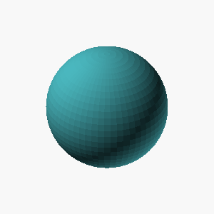
L2 · example 5 · mean 0.19 · max 0.77
A solid box 30mm x 20mm x 20mm with a rectangular notch 8mm wide and 7mm deep cut into the middle of its top face, running through the full depth of the box.

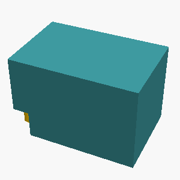
 {
box([0, -1.5, 10], 20, 20, 10);
plane([0, -0.5, 0], 0.5, 0.5);
plane([0, 0.5, 0], 0.5, 0.5);
plane([-8, -0.5, 0], 0.5, 0.5);
plane([8, -0.5, 0], 0.5, 0.5);
translate([8, -0.5, 0], 9, 5, -5);
cube([0, -0.5, -8], 7, 8);
cube([0, -0.5, 8], 7, 8);
}")
L3 · example 6 · mean 0.20 · max 0.44
An L-shaped bracket 35mm wide: a horizontal leg 30mm long and a vertical leg 70mm tall, both 5mm thick, joined at a right angle. The horizontal leg has a circular hole of radius 6mm through its center, drilled vertically.

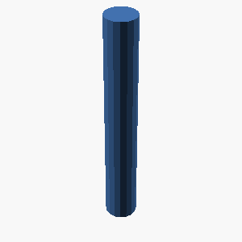
 {
cube([35,35,45]);
translate([10,10,-22]) cylinder(h=35, r=5, $fn=64);
translate([10,10,20]) cylinder(h=35, r=5, $fn=64);
translate([10,0,-22]) circle($r=37/3, $fn=64);
translate([0,-10,20]) cylinder(h=35, r=5, $fn=64);
translate([0,10,20]) cylinder(h=35, r=5, $fn=64);
translate([0,25,-22]) cylinder(h=35, r=5, $fn=64);
translate([0,25,20]) cylinder(h=35, r=5, $fn=64);
translate([22,10,-22]) cylinder(h=35, r=5, $fn=64);
translate([22,0,-22]) cylinder(h=35, r=5, $fn=64);
translate([22,0,20]) cylinder(h=35, r=5, $fn=64);
translate([22,25,-22]) cylinder(h=35, r=5, $fn=64);
translate([22,25,20]) cylinder(h=35, r=5, $fn=64);
translate([22,47,-22]) cylinder(h=35, r=5, $fn=64);
translate([22,47,20]) cylinder(h=35, r=5, $fn=6")
L4 · example 7 · mean 0.00 · max 0.00
A monument-like shape: a circular base plate of radius 40mm and thickness 5mm, with a cylindrical post of radius 23mm and height 30mm standing centered on top of it, and the post capped with a hemispherical dome of radius 23mm.

 {
translate([0, 0, -1]) hemisphere(h=30, r=23);
translate([0, 0, 1]) cylinder(r=23, h=30, $fn=64);
translate([0, 0, 1]) cylinder(r=40, h=5, $fn=64);
}")
L1 · example 8 · mean 0.20 · max 0.40
Create an upright cylinder of height 70mm and diameter 80mm.

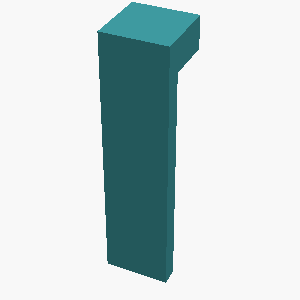
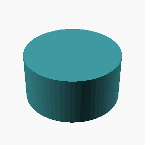
L2 · example 9 · mean 0.00 · max 0.00
Create a 70mm by 70mm plate of thickness 5mm with a centered 14mm-diameter through-hole.

;
{
path_new_n1_d1_43 = M(\"M\");
path_new_n1_d3_43 = M(\"D\");
path_new_n1_o3_43 = M(\"O\");
path_new_n1_r2_43 = M(\"R2\");
path_new_n1_l3_43 = M(\"L\");
path_new_n1_3 = M(\"h=5.0, r=0.5, $fn=64\");
path_new_n1_3_d1 = M(\"h=10.0, $fn=64\");
path_new_n1_o1 = M(\"O\");
path_new_n1_r1 = M(\"R1\");
path_new_n1_l1 = M(\"L\");
path_new_n1_1_3 = M(\"z=-7, $fn=64\");
path_new_n1_1_3_d1 = M(\"z=-11, $fn=64\");
path_new_n1_o1_d1 = M(\"O\");
path_new_n1_r1_d1 = M(\"R1\");
path_new_n1_l1_d1 = M(\"L\");
path_new_n1_o3 = M(\"O1\");
path_new_n1_r3 = M(\"R1\");
path_new_n1_l3 = M(\"L1\");
path_new_n1_o3_d1 = M(\"o=70, $fn=64\");
path_new_n1_r3_d1 = M(\"r=50, $fn=64\");")
 {
cube([[0, -5], [0, -5], [14, -5], [14, 5]], [5]); // 70mm x 70mm plate thickness 5mm ($fn=64$)
translate([[0, 7, 0]]) cylinder(h=14, r=7, $fn=64); // centered 14mm-diameter through-hole (h = d, r = 7)
}")
L3 · example 10 · mean 0.00 · max 0.00
A rectangular plate 125mm x 100mm, 8mm thick, with a 4 by 3 grid of circular through-holes of radius 8mm, spaced 25mm apart, the grid centered on the plate.

L4 · example 11 · mean 0.10 · max 0.41
A monument-like shape: a circular base plate of radius 40mm and thickness 10mm, with a cylindrical post of radius 17mm and height 35mm standing centered on top of it, and the post capped with a hemispherical dome of radius 17mm.

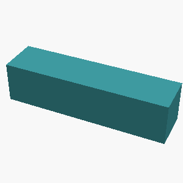
 {
cube([20,20,10]);
translate([10,10,-1]) cylinder(h=35, r=15, $fn=64);
translate([0,-5]) hemisphere(r=15, $fn=64);
}")
L1 · example 12 · mean 0.31 · max 0.85
Create a sphere 80mm in diameter.

;")
;")
L2 · example 13 · mean 0.00 · max 0.00
A flat rectangular plate 75mm x 45mm, 10mm thick, with a circular hole of radius 8mm drilled through its center.

L3 · example 14 · mean 0.10 · max 0.42
A stepped circular shaft standing upright, made of 3 stacked coaxial cylinders from bottom to top: a section of radius 35mm and height 15mm, then a section of radius 29mm and height 30mm, then a section of radius 11mm and height 25mm. Each section is narrower than the one below it.

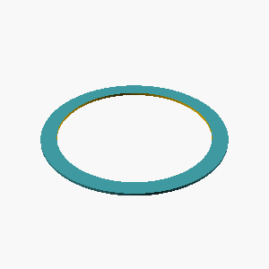
 {
cube(15, 15, 10);
translate(0, 0, 4) cylinder(h=30, r=29, $fn=64);
translate(0, 4, 10) cylinder(h=15, r=35, $fn=64);
translate(0, 12, 30) cylinder(h=25, r=29, $fn=64);
}")
L4 · example 15 · mean 0.11 · max 0.45
An upright hollow tube 75mm tall, outer radius 15mm, inner radius 11mm, open at both ends, with 3 circular holes of radius 4mm drilled radially through the wall at half the tube's height, evenly spaced around the circumference.

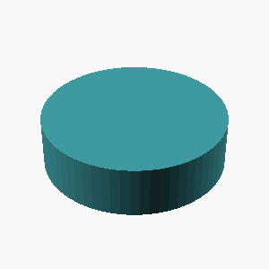
 {
cylinder(h=150, r=15, $fn=64, z=21);
cylinder(h=150, r=15, $fn=64, z=21);
cylinder(h=150, r=15, $fn=64, z=21);
translate([0,0,1]) cylinder(h=11, r=4, $fn=64);
translate([0,0,1]) cylinder(h=11, r=4, $fn=64);
translate([0,0,1]) cylinder(h=11, r=4, $fn=64);
}")
L1 · example 16 · mean 0.13 · max 0.53
A solid cone 65mm tall with a base radius of 15mm, point facing up.

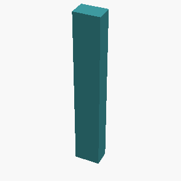
L2 · example 17 · mean 0.10 · max 0.40
Create an upright open-ended pipe: height 20mm, outer diameter 40mm, wall thickness 3mm.

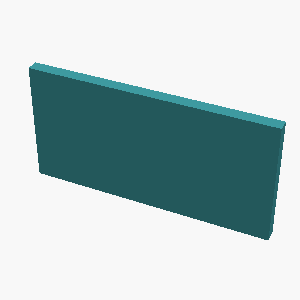
;
translate([20,20,50]);
circule($fn=64, r=39, z=20);
translate([0,0,-152]);
circule($fn=64, z=20, r=39);
translate([20,0,-152]);
circule($fn=64, r=39, z=20);
translate([30,0,-152]);
circule($fn=64, r=39, z=20);
translate([40,0,-152]);
circule($fn=64, r=39, z=20);
translate([50,0,-152]);
circule($fn=64, r=39, z=20);")
L3 · example 18 · mean 0.24 · max 0.48
A stepped circular shaft standing upright, made of 3 stacked coaxial cylinders from bottom to top: a section of radius 29mm and height 25mm, then a section of radius 20mm and height 30mm, then a section of radius 8mm and height 15mm. Each section is narrower than the one below it.

 {
// Bottom step: radius 29, height 25
cylinder(h=25, r=29);
// Middle step: radius 20, height 30
cylinder(h=30, r=20);
// Top step: radius 8, height 15
cylinder(h=15, r=8);
}")
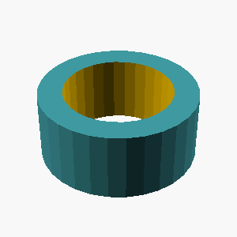
L4 · example 19 · mean 0.00 · max 0.00
A gear-like disc 6mm thick with radius 35mm, with 12 rectangular teeth evenly spaced around its rim. Each tooth is 6mm wide and extends 10mm radially outward from the rim, spanning the full thickness of the disc.

 {
// Outer Cone
rotate([45], 7) mesh(cylinder(x=220, y=110, thickness=4, z=20, $fn=64));
mesh(outerRadius=35 + 6 + 4 + 4, outerThickness=6);
mesh(cylinder(x=220 - 6, y=110 - 20, z=20, thickness=4, $fn=64));
// Tooth Base Layer
mesh(outerRadius=35 + 1.5, outerThickness=5, outerDepth=4);
mesh(cylinder(x=220, y=110, thickness=4, z=20, $fn=64));
// Tooth Edges
rotate([6], 25) mesh(cylinder(x=220, y=110, thickness=1.5, z=4, $fn=64));
rotate([25], 25) mesh(cylinder(x=150, y=110, thickness=1, z=4, $fn=64));
mesh(cylinder(x=220, y=100, thickness=1.5, z=4, $fn=64));
rotate([30], 25) mesh(cylinder(x=220, y=110, thickness=15, z=4, $fn=64));
// Inner Ring/Phase Pattern (covering remaining area)
rotate([45], 12) mesh(cylinder(x=350")
 {
// Define the base circle
translate(0,0);
circle(r=35);
radius(35);
// Calculate the total width of 12 teeth:
// 12 teeth * 6mm width per tooth = 72mm width total
right(72);
// Calculate the height of a single tooth (distance from rim to edge):
right(10);
// Build the disc with teeth
cube([0,10,0], [72-10,10,10], [72,20,0], [10,20,10]);
translate(-0.5, 0, 0);
}")
L1 · example 20 · mean 0.10 · max 0.40
Create an upright cylinder of height 50mm and diameter 70mm.

 {
height(50);
diameter(70);
}")